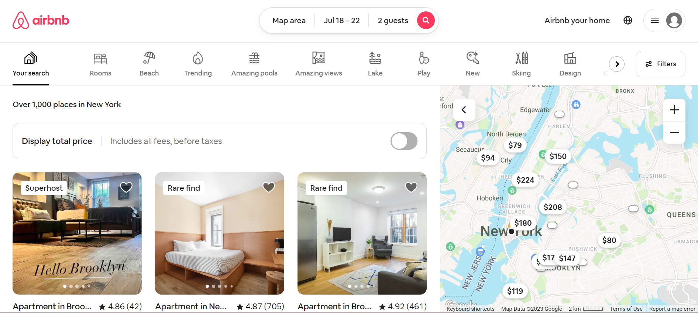
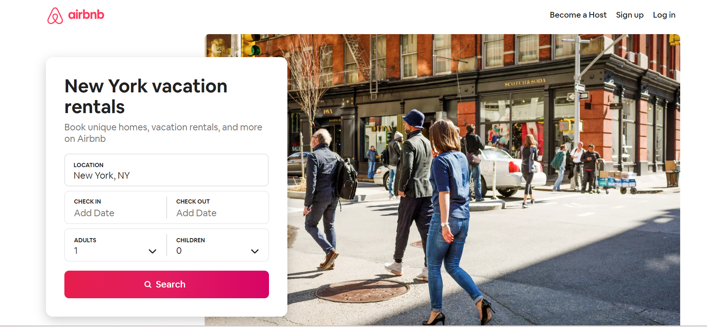
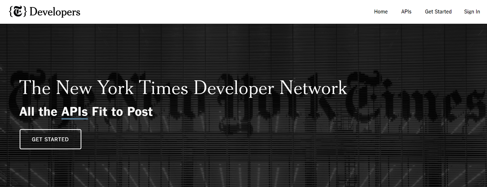
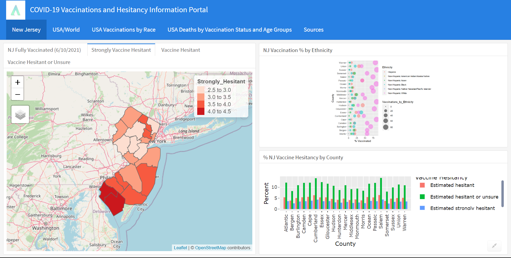

Hi There!
My name is Anish Gupta. I graduated from Rutgers University-New Brunswick in May 2023. I majored in Information Technology and Informatics and minored in Critical Intelligence Studies and Data Science. I am passionate about Data Science and Cybersecurity.
I have a great passion for numbers and data and have spent much of my Rutgers career focusing on this area. In my projects at Rutgers as well as my internship work at the EIA and the ODNI, I have solved complex problems with data, provided predictive analytics solutions, and generated user-friendly visualizations. My other area of interest is Cybersecurity especially for national security. Organizations face cybersecurity risks every day. I find the work to identify and mitigate these risks extremely interesting and fascinating.

This is an attempt to show how the world used different tools to fight the Covid-19 Pandemic. It looks at total vaccinations, people fully vaccinated per hundred, hospital beds per thousand, total deaths, and median new tests per thousand.

In this project, I performed feature engineering and predictive data modeling to predict the prices of Airbnb rentals in New York City. The price prediction was done using OLS linear regression, Random Forest, XG Boost, and Leaps/ Lars. While looking at several different models, it was concluded that the best models are the OLS linear regression model and the xgboost model. However, OLS linear regression model gives a little better prediction.

Exploratory Data Analysis of New York City Airbnb rentals including hypothesis testing.

In this project, I tried to answer the question - which classical music composer has the most articles written about them in the last 50 years in the New York Times.
This research project focuses on data collection from Reddit for evaluating the effectiveness of removal explanations in countering misinformation.

In this project, I build a relational database from a non-relational datastore.

This dashboard uses user friendly interactive visualizations to help healthcare providers educate the vaccine hesitant patient and help identify populations that are prone to vaccine hesitancy.
This is a study of Meteorite Landings and Near Earth Objects using open-source datasets from NASA.